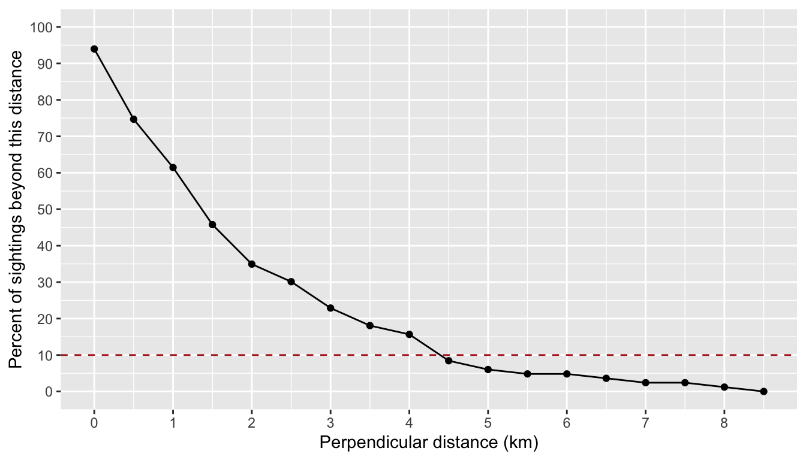
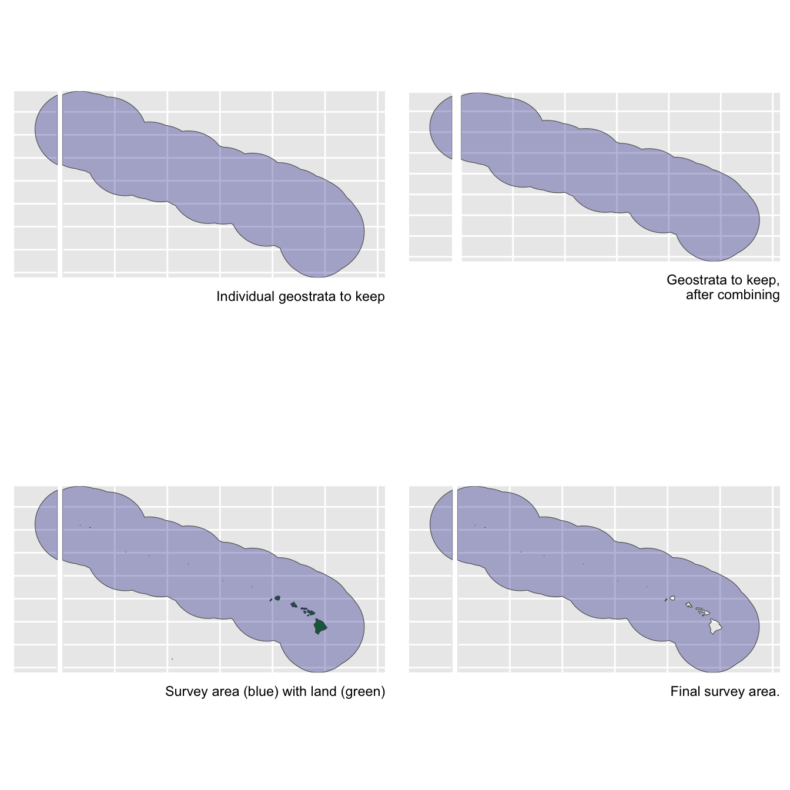
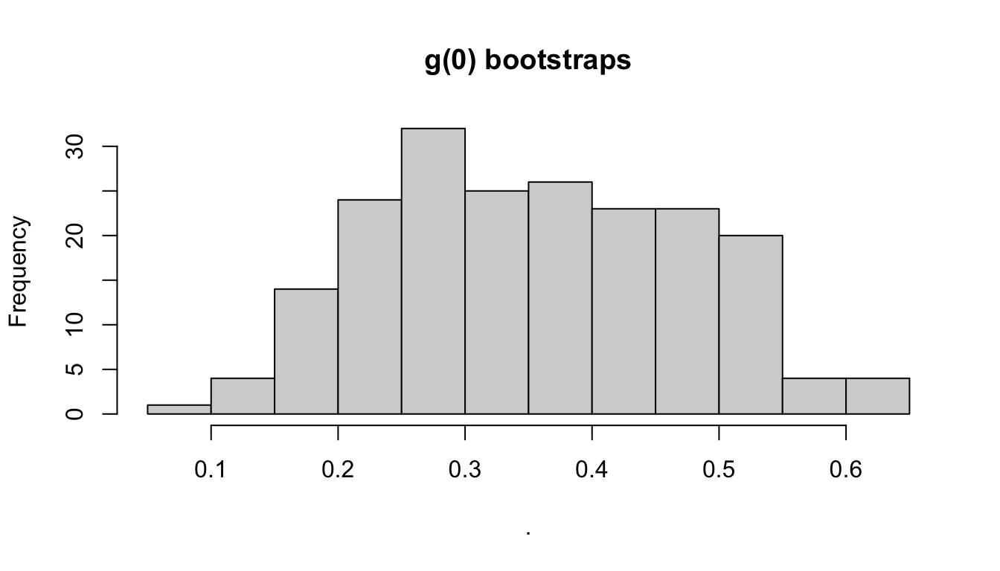
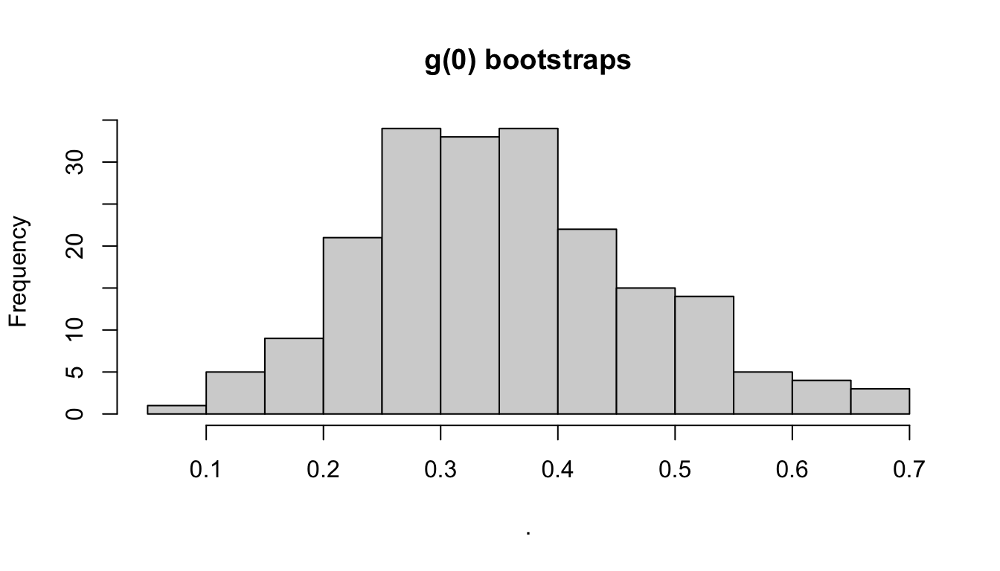
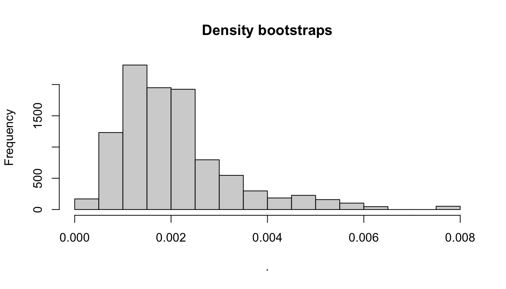

11 Subgroup-based analysis
False killer whales (Pseudorca crassidens) are rare and occur in dispersed subgroups, which complicates conventional distance sampling approaches to line-transect analysis (Bradford et al. 2014). To better estimate their abundance in Hawaiian waters, the Pacific Islands Fisheries Science Center initiated a sub-group protocol referred to as the “PC Protocol”, a reference to the species’ scientific name. Data collected using the PC Protocol is then analyzed using a subgroup-based analytical approach (Bradford et al. 2014, 2020).
An additional complication is that false killer whales in Hawaiian waters belong to three discrete populations – the Main Hawaiian Islands insular population, the Northwestern Hawaiian Islands (NWHI) population, and a pelagic population – whose ranges partially overlap, which means that population assignment cannot always be based simply on the geographic location of sightings. When geographic assignment of population is not possible, biopsy-sampled genetics or photo-identification inference, if available, is used to assign each sighting to a population post-hoc.
To accommodate these special circumstances for false killer whales (and potentially other species with subgroup structure) with an appropriate balance of flexibility and efficiency, LTabundR includes a function named lta_subgroup(), whose use looks something like this:
lta_subgroup(df_sits,
truncation_distance,
ss,
density_segments,
density_das,
density_sightings,
Rg0= NULL,
cruz10 = NULL,
g0_spp = NULL,
g0_truncation = NULL,
g0_constrain_shape = FALSE,
g0_jackknife_fraction = 0.1,
abundance_area = NULL,
iterations = 5000,
density_bootstraps = 10000,
output_dir = NULL,
toplot = TRUE,
verbose = TRUENote that there are several required inputs (without any defaults) as well as many optional inputs (with defaults provided).
We will step through each of these inputs below, using a case study in which we estimate the abundance of the pelagic false killer whale population in the Hawaiian EEZ for 2017 (Bradford et al. 2020).
Before proceeding, we recommend that you review the details of how subgroup data are processed within the LTabundR framework.
Inputs
df_sits
This is a data.frame of sightings you want to use to fit the detection function model. For false killer whales in Bradford et al. (2020), this is a combination of systematic-effort sightings prior to 2011 (made without the PC protocol) and “Phase 1” sightings from 2011 onwards (using the PC protocol). No filtering will be applied to these sightings within this function, so make sure you provide the data pre-filtered. Bradford et al. (2020) used a single detection function for all populations of false killer whales.
LTabundR has a built-in dataset for processed Central North Pacific surveys, 1986-2020, using 150-km segments. We will use that here:
The code used to generate this dataset can be seen by pulling up the help documentation: ?noaa_10km_1986_2020.
All systematic-effort sightings from 1986-2010 are assumed to represent an initial “Phase 1” subgroup sighting (even though the PC protocol was not yet in practice), and therefore usable in detection function estimation. Here we draw those sightings from the above cruz object, filtering as needed (the species code for false killer whales is "033"), and to simplify we will select only a few key columns.
sits1 <-
cruz$cohorts$pseudorca$sightings %>%
filter(OnEffort == TRUE,
year < 2011,
Lat >= 5, Lat <= 40, Lon >= -185, Lon <= -120,
species == '033',
ObsStd == TRUE,
Bearing <= 90,
mixed == FALSE) %>%
select(DateTime, Lat, Lon, Cruise, PerpDistKm)
sits1 %>% nrow
[1] 18
sits1 %>% head
DateTime Lat Lon Cruise PerpDistKm
SpPerc14 2009-02-20 16:07:20 21.461833 -157.4507 901 0.01823864
SpPerc16 1986-11-13 09:43:00 10.466667 -139.2833 990 1.17493742
SpPerc123 1989-09-10 17:18:00 7.350000 -129.5333 1268 0.07751339
SpPerc130 1990-09-09 10:55:00 7.750000 -128.3333 1370 0.00000000
SpPerc136 1998-09-03 09:51:53 13.386167 -153.5658 1611 1.20590444
SpPerc137 1999-08-18 13:54:24 7.031167 -145.1092 1614 1.21766870For 2011 onwards, we will use Phase 1 subgroup detections from the PC protocol, making sure that the column holding detection distances is named PerpDistKm:
sits2 <-
cruz$cohorts$pseudorca$subgroups$subgroups %>%
filter(OnEffort == TRUE,
lubridate::year(DateTime) >= 2011,
Lat >= 5, Lat <= 40, Lon >= -185, Lon <= -120,
ObsStd == TRUE,
Angle <= 90,
Species == '033',
Phase == 1) %>%
select(DateTime, Lat, Lon, Cruise, PerpDistKm = PerpDist)
sits2 %>% nrow
[1] 65
sits2 %>% head
DateTime Lat Lon Cruise PerpDistKm
1 2011-10-26 13:16:06 7.240500 -164.9347 1108 1.4714466
2 2011-10-26 13:31:17 7.207333 -164.9572 1108 2.1211999
3 2011-10-26 13:48:26 7.169667 -164.9830 1108 0.9876483
4 2011-10-26 14:02:29 7.139000 -165.0043 1108 1.5731017
5 2013-05-13 07:09:54 24.302333 -168.3195 1303 1.6787670
6 2013-05-13 07:24:54 24.343500 -168.3315 1303 0.9470481To create df_sits for detection function fitting, we combine these datasets together:
truncation_distance
The truncation distance, in km, will be applied during detection function model fitting. Typically the farthest 5 - 10% of sightings are truncated, but this needs to be balanced by sample size considerations.
Tabulate detection distances using a LTabundR function:
dists <-
summarize_distances(df_sits$PerpDistKm) %>%
select(-total_within)
dists
km_min_incl km_max_excl sightings percent_beyond total_beyond km_mid
1 0.0 0.0 5 93.975904 78 0.00
2 0.0 0.5 16 74.698795 62 0.25
3 0.5 1.0 11 61.445783 51 0.75
4 1.0 1.5 13 45.783133 38 1.25
5 1.5 2.0 9 34.939759 29 1.75
6 2.0 2.5 4 30.120482 25 2.25
7 2.5 3.0 6 22.891566 19 2.75
8 3.0 3.5 4 18.072289 15 3.25
9 3.5 4.0 2 15.662651 13 3.75
10 4.0 4.5 6 8.433735 7 4.25
11 4.5 5.0 2 6.024096 5 4.75
12 5.0 5.5 1 4.819277 4 5.25
13 5.5 6.0 0 4.819277 4 5.75
14 6.0 6.5 1 3.614458 3 6.25
15 6.5 7.0 1 2.409639 2 6.75
16 7.0 7.5 0 2.409639 2 7.25
17 7.5 8.0 1 1.204819 1 7.75
18 8.0 8.5 1 0.000000 0 8.25Plot these options:
ggplot(dists, aes(x=km_max_excl, y=percent_beyond)) +
geom_point() + geom_path() +
geom_hline(yintercept = 10, lty=2, color='firebrick') +
ylab('Percent of sightings beyond this distance') +
xlab('Perpendicular distance (km)') +
scale_x_continuous(n.breaks = 10) +
scale_y_continuous(limits = c(0, 100), n.breaks = 10) 
Based on these results, we will choose a truncation distance of 4.5 km.
ss
This is a numeric vector of subgroup school sizes. The function will find this vector’s arithmetic mean and bootstrapped CV. In Bradford et al. (2020), school size data come from all Phase 1 and Phase 2 estimates of subgroup sizes from 2011 onwards. In the processed cruz object, each of those estimates is the geometric mean of repeat estimates from separate observers.
ss <-
cruz$cohort$all$subgroups$subgroups %>%
filter(lubridate::year(DateTime) >= 2011,
Lat >= 5, Lat <= 40, Lon >= -185, Lon <= -120,
GSBest_geom_valid == TRUE, # only use valid "Best" estimates
Species == '033') %>%
pull(GSBest_geom)
ss %>% length
[1] 180
ss
[1] 5.00 7.00 1.00 1.00 1.26 2.00 2.63 2.62 1.00 5.75 1.00 1.73
[13] 17.94 1.00 4.00 4.76 1.73 1.00 3.78 4.47 2.45 2.00 2.00 1.00
[25] 1.00 5.00 1.00 4.00 1.00 1.00 1.00 1.00 1.00 1.00 2.00 1.00
[37] 4.00 7.55 2.00 4.12 7.09 2.83 2.00 3.00 2.88 3.46 4.24 2.00
[49] 1.00 1.00 2.00 1.00 1.00 1.00 1.00 1.00 2.00 1.00 1.00 1.00
[61] 1.86 2.47 2.00 1.41 2.52 1.26 2.00 6.00 4.16 2.00 1.00 3.00
[73] 5.00 5.67 4.00 1.00 2.00 2.00 4.00 4.47 2.00 2.00 2.00 4.47
[85] 2.00 1.00 2.00 1.00 1.00 2.00 2.00 1.41 4.47 1.00 1.00 3.17
[97] 2.88 2.00 2.00 6.00 5.00 3.63 2.00 3.00 2.00 8.12 8.00 4.00
[109] 2.00 1.00 1.00 4.00 4.00 2.00 1.00 2.00 6.00 2.00 2.00 2.38
[121] 1.00 1.00 1.00 1.00 1.00 2.00 2.00 1.00 1.00 1.00 1.00 1.00
[133] 1.00 1.00 2.00 1.00 2.00 2.00 1.73 1.00 4.00 7.48 1.41 2.00
[145] 1.00 1.00 1.00 1.00 2.00 1.00 2.00 2.83 3.00 2.00 3.00 1.41
[157] 1.00 1.00 2.83 2.00 4.00 1.00 1.00 1.00 2.00 2.00 4.00 2.00
[169] 2.00 1.00 1.00 2.83 1.00 2.88 2.45 2.00 2.00 1.00 1.00 1.00Rg0
This is a data.frame with estimates of Relative g(0) and its CV at each Beaufort sea state. If this input is left NULL, then these estimates will be produced by the function using the subsequent g0_ inputs below. If this input is not supplied and any of the subsequent g0_ inputs are missing, then g(0) will be assumed to be 1.0 with CV of 0.0.
When you do supply this Rg0 input, the data.frame has three required columns: bft (Beaufort sea state, numbers between 0 and 6), Rg0 (Rg(0) estimates for each Beaufort state), Rg0_CV (the CV of the Rg(0) estimate in each Beaufort state). Other columns are allowed but will be ignored.
Here is an example of a valid Rg0 input based on the values reported for false killer whales in Bradford et al. (2020). (These numbers are also available in the built-in dataset barlow_2015.).
Rg0 <- data.frame(bft = 0:6,
Rg0 = c(1, 1, 0.72, 0.51, 0.37, 0.26, 0.19),
Rg0_CV = c(0, 0, 0.11, 0.22, 0.34, 0.46, 0.59))
Rg0
bft Rg0 Rg0_CV
1 0 1.00 0.00
2 1 1.00 0.00
3 2 0.72 0.11
4 3 0.51 0.22
5 4 0.37 0.34
6 5 0.26 0.46
7 6 0.19 0.59Again: if you supply this input, then the following g0_ inputs will be ignored.
cruz10
This is a processed cruz object with short segment lengths, ideally 10 km or less (hence the 10 in the input name). This cruz object will be used to estimate Rg(0), i.e., the relative trackline detection probability (see its chapter), using the following g0_ inputs. LTabundR comes with a built-in dataset we can use for this purpose:
The code used to generate this dataset can be seen by pulling up the help documentation: ?noaa_10km_1986_2020.
g0_spp
This and the following g0_ inputs will be used to model Relative g(0) estimates and their CV in various Beaufort sea states. If the previous input, Rg0 is provided, then these g0_ inputs will be ignored, and no Rg(0) modeling will take place. Furthermore, if any of these g0_ inputs are not provided, Rg(0) will be coerced to 1.0 with a CV of 0.0 for all sea states.
This input, g0_spp, is a character vector of species code(s) to use to estimate Rg(0). In most cases this will be a single species, e.g., "033" for false killer whales.
g0_truncation
The truncation distance to use when estimating Rg(0). In Bradford et al. (2020) this is 5.5 km.
g0_constrain_shape
Some Rg(0) curves will not decline monotonically due to sample size issues at low Bft (0-2) or high Bft (5-6) states. To coerce monotonic decline, set this input to TRUE, and the function will use a shape-constrained GAM (scam() from package scam) instead of a classic mgcv::gam().
g0_jackknife_fraction
The proportion of data to leave out within each jackknife permutation. The default is 0.1 (i.e., 10% of the data, yielding 10 jackknife loops), after Barlow (2015).
density_segments
The survey segments to be used in density/abundance estimation. For example, Bradford et al. (2020) used 150-km segments to estimate false killer whale density in the Hawaiian EEZ in 2017. For this we can use the 1986-2020 dataset we loaded above. Note that no filtering will be applied to these segments by the lta_subgroup() function, so we need to filter them ourselves first: we want only systematic segments for the Hawaiian EEZ in 2017 (specifically, just cruises 1705 and 1706).
cruzi <- filter_cruz(cruz = cruz,
analysis_only = TRUE,
years = 2017,
cruises = c(1705, 1706),
regions = 'HI_EEZ',
bft_range = 0:6,
eff_types = 'S',
on_off = TRUE)From this filtered cruz object, we will isolate the segments data:
Since we do not want to stratify our analysis by smaller geostrata, such as the Main Hawaiian Islands, we will go ahead and coerce all stratum assignments to the Hawaiian EEZ geostratum:
density_das
This is the complete survey data corresponding to the above segments. These data will be used to determine the proportion of survey effort occurring in each Beaufort sea state that is needed to compute weighted estimates of g(0) from the Rg(0) values.
density_sightings
These are the encounters to use in density/abundance estimation. In Bradford et al. (2020), these were the Phase 1 detections of false killer whale subgroups within the population-region-year of interest, e.g., Northwestern Hawaiian Island population sightings within the Hawaiian EEZ in 2017. No filtering is applied to these sightings within lta_subgroups(), so make sure only the sightings you wish to use are included and nothing more.
In this example, since we do not have population information on hand, we will not filter detections to a specific population. Instead, we will estimate abundance of all false killer whales within the Hawaiian EEZ:
density_sightings <-
cruz$cohorts$all$subgroups$subgroups %>%
filter(lubridate::year(DateTime) == 2017,
EffType == 'S',
OnEffort == TRUE,
PerpDist <= truncation_distance,
Angle <= 90,
ObsStd == TRUE,
Species == '033',
Phase == 1)
density_sightings %>% nrow
[1] 23
density_sightings %>% head
Cruise Date DateTime Lat Lon OnEffort EffType Bft
1 1705 2017-09-21 2017-09-21 14:17:27 20.04283 -161.9177 TRUE S 5
2 1705 2017-09-21 2017-09-21 14:39:40 20.06017 -161.9840 TRUE S 5
3 1705 2017-09-29 2017-09-29 13:22:08 23.55750 -175.8527 TRUE S 1
4 1705 2017-09-29 2017-09-29 13:26:05 23.56050 -175.8643 TRUE S 1
5 1705 2017-09-29 2017-09-29 13:32:33 23.56517 -175.8832 TRUE S 1
6 1705 2017-09-29 2017-09-29 13:34:09 23.56633 -175.8878 TRUE S 1
SwellHght RainFog HorizSun VertSun Glare Vis ObsL Rec ObsR ObsInd SightNo
1 5 5 10 1 FALSE 5.5 126 384 399 <NA> 064
2 5 5 10 1 FALSE 5.5 126 384 399 <NA> 064
3 3 1 8 1 FALSE 6.5 126 384 399 <NA> 073
4 3 1 8 1 FALSE 6.5 126 384 399 <NA> 073
5 3 1 8 1 FALSE 6.5 126 384 399 <NA> 073
6 3 1 8 1 FALSE 6.5 126 384 399 <NA> 073
Obs_Sight Species SubGrp Angle RadDist seg_id PerpDist GSBest GSH GSL
1 399 033 A 14 5.0374102 491 1.2186598 3.00 4 2.00
2 399 033 B 24 3.1483814 491 1.2805621 3.67 6 2.33
3 126 033 A 49 3.3706200 502 2.5438392 2.00 3 1.00
4 126 033 B 68 0.6852359 502 0.6353397 1.00 2 1.00
5 126 033 E 89 2.9817023 502 2.9812482 1.00 2 1.00
6 126 033 F 12 6.9449589 502 1.4439381 1.00 1 1.00
GSBest_geom GSH_geom GSL_geom GSBest_valid GSBest_geom_valid ObsStd
1 3.00 4.00 2 TRUE TRUE TRUE
2 2.88 4.12 2 TRUE TRUE TRUE
3 2.00 3.00 1 TRUE TRUE TRUE
4 1.00 2.00 1 TRUE TRUE TRUE
5 1.00 2.00 1 TRUE TRUE TRUE
6 1.00 1.00 1 TRUE TRUE TRUE
stratum_HI_EEZ stratum_OtherCNP stratum_MHI stratum Phase
1 TRUE TRUE FALSE HI_EEZ 1
2 TRUE TRUE FALSE HI_EEZ 1
3 TRUE TRUE FALSE HI_EEZ 1
4 TRUE TRUE FALSE HI_EEZ 1
5 TRUE TRUE FALSE HI_EEZ 1
6 TRUE TRUE FALSE HI_EEZ 1As above, let’s make sure the geostratum assignments for these sightings are simple:
abundance_area
This is the area, in square km, of the region of interest. The density estimate will be scaled by this area.
We have two options for finding this area. The first is to draw the area from our cohort$strata slot:
The second is to calculate it ourselves using the LTabundR function strata_area(). This second option will be useful if your study area is a complicated combination/substraction of multiple geostrata.

Remaining inputs
iterations: Number of iterations to use in the various CV bootstrapping procedures occurring throughout this function, specifically: effective strip width CV estimation, subgroup size CV estimation, weighted g(0) CV estimation, and encounter rate estimation.
output_dir: The path in which results RData files should be stored. If left ““, the current working directory will be used.
toplot: A Boolean, with default FALSE, indicating whether to plot various aspects of the analysis.
verbose: A Boolean, with default TRUE, indicating whether to print status updates to the Console.
density_bootstraps: Number of bootstrap iterations to use for the CV estimate of density and abundance specifically. This input allows this final step to use a different (typically larger) iteration size than the iterations input above.
Here we call the lta_subgroup() function without re-modeling the Relative g(0) parameters, with only 200 iterations:
results_subgroup <-
lta_subgroup(df_sits = df_sits,
truncation_distance = truncation_distance,
ss = ss,
density_segments = density_segments,
density_das = density_das,
density_sightings = density_sightings,
Rg0 = Rg0,
abundance_area = abundance_area,
iterations = 200,
output_dir = 'subgroup/',
toplot = TRUE,
verbose = TRUE,
density_bootstraps = 10000)Outputs
The function returns a list with many slots, including estimates of density and abundance – along with estimates of intermediate parameters – with a CV derived from a bootstrapping routine. To demonstrate this output, we will use results from a call with only 10 bootstrap iterations.
results_subgroup %>% names
[1] "D" "D_CV" "D_L95"
[4] "D_U95" "N" "N_CV"
[7] "N_L95" "N_U95" "ER"
[10] "ESW" "ESW_CV" "ss"
[13] "n" "L" "n_segments"
[16] "g0" "g0_cv" "g0_details"
[19] "df" "bootstraps" "iterations"
[22] "density_bootstraps"Most of these slots hold best-estimates of parameters or sample size details:
results_subgroup[c(1:17, 21:22)]
$D
1
0.002180381
$D_CV
1
0.4861588
$D_L95
[1] 0.0005565786
$D_U95
[1] 0.005437708
$N
[1] 5396
$N_CV
[1] 0.4861189
$N_L95
[1] 1377
$N_U95
[1] 13456
$ER
[1] 0.001747709
$ESW
[1] 2.683627
$ESW_CV
1
0.1247504
$ss
[1] 2.397167
$n
[1] 23
$L
[1] 13160.08
$n_segments
[1] 97
$g0
[1] 0.358
$g0_cv
[1] 0.325
$iterations
[1] 200
$density_bootstraps
[1] 10000The g0_details slot includes the results from the g0_model() and g0_weighted() functions called internally by lta_subgroup(). See those functions’ documentation pages for details.
The df slot includes details of the detection function fit. See the documentation for df_plot() for details.
The bootstraps slot has the bootstrapped values for various parameters, in case they are useful for troubleshooting, subsequent analyses, and/or plotting:
Some examples:



Behind the scenes
This function performs the following operations:
Fits a detection function to
df_sitswithout covariates, using theLTabundRfunctiondf_fit(), in order to estimate the effective strip width (ESW).Conducts bootstrap re-sampling of the detection function fitting routine in order to estimate the CV of ESW.
Estimates the arithmetic mean subgroup size based on the
ssinput.Creates a bootstrap-resampled distribution of subgroup sizes, with which CV is estimated.
Optional: models the Relative g(0) in different survey conditions using the
LTabundRfunctiong0_model(). This function also estimates the CV of the Rg(0) estimate in each Beaufort sea state using jackknife resampling.Estimates the encounter rate (subgroup detections / trackline surveyed).
Creates a bootstrap-resampled distribution of encounter rate estimates.
Calculates an empirical weighted g(0) estimate according to the proportion of effort occurring in each Beaufort sea state, then uses an automated parameter MCMC optimization routine (see details in
LTabundRfunctiong0_weighted()) to estimate the CV of the weighted g(0) estimate.Creates a bootstrap-resampled distribution of the weighted g(0) estimate.
Estimates density using the point estimates of effective strip width, subgroup size, g(0), and the encounter rate.
Estimates abundance by scaling the density estimate by the provided
abundance_areainput.Creates a bootstrap-resampled distribution of the density estimate by iteratively drawing values from the resampled distributions of the constituent parameters of the density equation.
Creates a bootstrap-resampled distribution of the abundance estimate by scaling the density distribution by the
abundance_areainput.
Note that this approach could theoretically be used for other species that occur in subgroups.